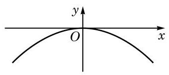
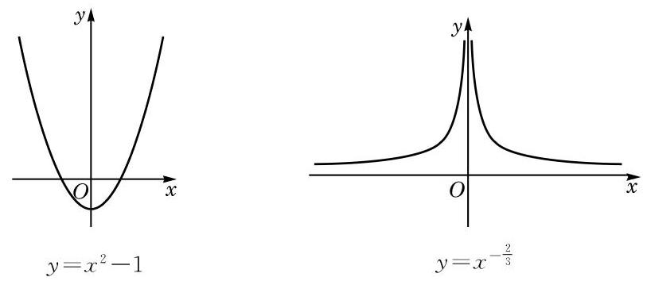
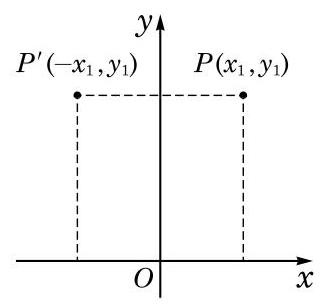
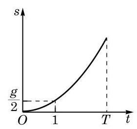

在生活中，我们经常遇到对称的图形。拱桥的桥面形成的弧，就可以视为是轴对称的。如果把桥面抽象成一条曲线，以曲线的最高点为原点，过原点作一水平直线为 轴，再过原点作一竖直直线为 轴，那么这条由拱桥桥面抽象出的曲线就成为一个函数的图像，并且该图像的一个特点是关于 轴成轴对称，如图 5-2-1 所示。

图 5-2-1
在学习二次函数和幂函数时，我们知道，形如 的二次函数和幂函数 的图像都是关于 轴成轴对称的，如图 5-2-2 所示。

图 5-2-2
图 5-2-2 中的这两个函数的图像都具有关于 轴成轴对称的共同特征，其相应的自变量与函数值的对应关系是如何体现这个特征的？
一个图形关于某条直线 成轴对称，是指该图形上的任意一点关于直线 的对称点也在此图形上。
现在，我们来探究"函数的图像关于 轴成轴对称"这一条件的等价表达形式。
在函数 的图像 上任取一点 ，就有

图 5-2-3
点 关于 轴的对称点为 （图 5-2-3）。如果函数 的图像关于 轴成轴对称，那么 也在图像 上，即
这说明，如果函数 的图像关于 轴成轴对称，那么对于任意给定的 ，均有
反之，如果对于任意给定的 ，均有 ，并且 ，那么对于函数 的图像上的任一点 ，它关于 轴的对称点 ，由于满足 ，并且 ，也必在此函数的图像上。因此，该函数的图像关于 轴成轴对称。
总结一下，就得到下述关于偶函数的定义：
定义 对于函数 ，如果对于其定义域 中任意给定的实数 ，都有 ，并且
就称函数 为偶函数（even function）。
根据上述推导及定义，从图形的角度来看，偶函数就是其图像关于 轴成轴对称的函数。
根据上述性质，如果要得到偶函数 的图像，只需要获得其在定义域中 （或 ）部分的图像就可以了。同理，如果要研究偶函数的性质，也只要研究其在定义域中 （或 ）部分的性质就可以了。
在现实生活中，有不少在一定范围内随着时间的增加而增加（或减少）的量，如自由落体运动的位移 就是如此。作出位移 关于时间 的函数图像，如图 5-2-4 所示。从图像上看，随着时间的增大，位移的确随之增大。这就是一种单调现象。此外，通过一个电阻的电流随其两端电压的增大而增大；许多物质在水中的溶解度随温度的升高而增加；山区的气温随海拔高度的升高而降低等，都是单调现象。

图 5-2-4
在学习指数函数及对数函数时，我们已经了解到如下的事实：
当 时，函数 与函数 的图像都表现出" 随 的增大而增大"的趋势；而当 时，函数 与函数 的图像却都表现出" 随 的增大而减小"的趋势。
借助指数和对数运算的性质，必修课程第 4 章中已经证明了，若 ，当 时， 及 ；而当 时， 及 。这样，我们就解释了为何这些函数的图像会表现出相应的单调性趋势。概括起来，可对一般函数给出其单调性的定义。
定义 对于定义在 上的函数 ，设区间 是 的一个子集。对于区间 上的任意给定的两个自变量的值 、，当 时，如果总有
就称函数 在区间 上是增函数（increasing function）；而如果总有
就称函数 在区间 上是减函数（decreasing function）。
特别地，如果总有
就称函数 在区间 上是严格增函数（strictly increasing function）；而如果总有
就称函数 在区间 上是严格减函数（strictly decreasing function）。
例如， 在区间 上是严格增函数； 在区间 上是严格减函数，在区间 上是严格增函数； 在区间 上是严格增函数；等等。
根据已经学习过的实数幂的性质，对于幂函数 ，当 时，该函数在区间 上是严格增函数；而当 时，该函数在区间 上是严格减函数。
根据指数及对数的运算性质，当 时， 在区间 上是严格增函数， 在区间 上是严格增函数；而当 时， 在区间 上是严格减函数， 在区间 上是严格减函数。
根据定义，严格增函数是增函数，严格减函数是减函数。
你能用定义证明初中学过的一次函数和反比例函数的单调性吗？